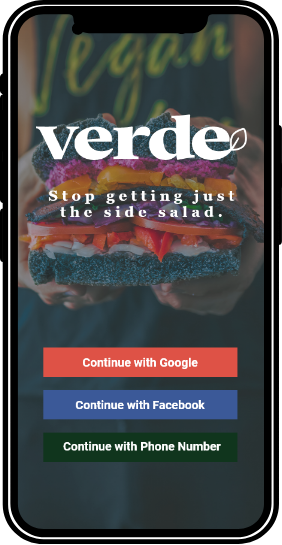

FRONT-END · LIVE WEBSITE
This Portfolio
I directed the design and content, worked with AI on the code, and published this responsive website through GitHub Pages.
See how it works ↗01 / 04
I'm Roberto, a Houston-based designer working across graphic production, UX/UI, and digital projects. I bring ideas to life through teamwork and hands-on production while expanding my skills in web development.
A mix of real production work, UX/UI case studies, and a working front-end website. Each project shows a different side of how I work.
I directed the design and content, worked with AI on the code, and published this responsive website through GitHub Pages.
From team-developed designs to finished vehicle graphics. My main role is production, with input into design and installation.
A team concept focused on helping a Houston community arts nonprofit make participation easier to understand.

A restaurant-finding mobile app concept designed to simplify discovery, comparison, and decision-making.
From collaborative reviews to finished physical graphics.
January 2026–Present · Houston, TX
I prepare approved artwork and lettering for emergency vehicles, turning team-developed, client-reviewed designs into physical graphics. Production is my main responsibility, and I also contribute to design discussions and support installation.
I work with Adobe Creative Cloud, Epson products, and Summa equipment to take approved graphics through physical production and toward the finished application.
August 2024–January 2026 · Houston, TX
I started at Frazer in documentation before moving into graphic production.
These earlier roles helped me build experience with safety practices, equipment, and demanding production environments.
Software, production equipment, and web technologies I'm developing.
Adobe Creative Cloud and Webflow, plus UX research, wireframing, and prototyping.
Google Workspace, Microsoft 365, and ChatGPT for collaboration and AI-assisted workflows.
Epson products, Summa equipment, and hands-on graphics preparation and installation.
Currently learning HTML, CSS, jQuery, and JavaScript fundamentals. This portfolio is an AI-assisted front-end project.
I bring experience in design and production while continuing to develop my coding skills. Read about this website ↗ or view its source on GitHub ↗.
I'm Roberto Izaguirre, a Houston-based designer who enjoys shaping an idea and figuring out how to make it work. My background combines hands-on graphic production with collaborative UX/UI projects.
At Frazer, I focus on producing graphics for emergency vehicles while contributing to design discussions and installation. My UX/UI work has strengthened how I approach problems from the user's point of view through research, wireframing, and prototyping.
I'm continuing to build my HTML, CSS, jQuery, and JavaScript fundamentals, and I'm interested in opportunities that value creativity, teamwork, and steady learning.
More about me on LinkedIn ↗